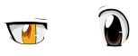
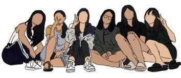
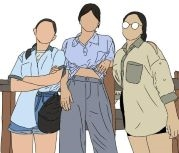
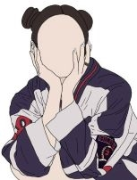

Hello! I am Koay Yi Ting, a student from Ngee Ann Polytechnic.
As an introvert, I enjoy staying at home, doing my own things.
But I am also a person who cherish my family and friends and I like
to go outings with them. My hobby is playing Badminton and watching
Youtube, Netflix and Viu.
My Education Journey
Primary School
[Jan 2011 - Oct 2016]
In Pioneer Primary, Our school organises events, programmes and camps for us to have
a chance to build up on our leadership skills. I had to opportunity to be a Student Councillor
as well as a member of my CCA, Chinese Dance. As a member of both community, I was able to
contribute something to my school which I was proud of.
In Westwood Secondary, Our school organises various type of events of students to participate
or even take in charge of it. Our school gives us many opportunities to learn and improve
both as a leader and a student. I was given many opportunity to improve myself as a Leader
and took 3 Leadership role to improve on my leadership skills. I have learn to be confident,
try out new things and not to be scared of stepping out of my comfort zone.
O Levels Score(E1R2B2): 12 nett, 14 raw
Leadership roles: Student Councillor,
Vice Captain of Badminton, Vice-Chairperson
CCA: Badminton
Westwood Secondary School.
Polytechnic
[Apr 2021 - Present]
This is my first year as an NP student. My Aim is slightly different from My Primary and Secondary
School, I want to focus more on my studies and skills for IT. Since IT is kind of new to me,
yet I am interested in it, so I would need to work hard to catch up. And My knowlegde of IT would
be crucial for my future career opportunity and choices.
Diploma of Choice: Information Technology
Ngee Ann Polytechnic. School Of InfoComm Technology.
My Interest
In secondary school, I was in Design and Technology and I like to sketch or draw once in a while when I have
the time to do so.




Projects
Project 1
Innovation Social Entrepreneurship(ISE)/
Values In Action(VIA) Project
Project descriptions...
Gold Award...
Project 2
Design & Technology O Levels Project
Project descriptions...
Award...
My Contact Infomations
School email: s10221765@connect.np.edu.sg
Personal email: koayyiting@gmail.com
Contact No.: 9061 4039
Instagram: @k_yiting_kyt